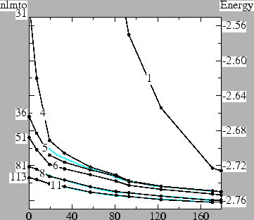

The full-potential program lmf was originally adapted from a program nfp written by M. Methfessel and M van Schilfgaarde. The method is described in some detail in the following reference (click here to view postscript file):
The full-potential program builds on the basic package (documented in file lmto.html) which contains an implementation of a tight-binding LMTO program in the Atomic Spheres Approximation (ASA), and shares most things in common with it, including a number of auxiliary programs useful to both ASA and this one. For example, both methods are linear augmented-wave methods, and the wave functions inside the augmentation spheres are equivalent in the two cases. The reader is strongly advised to review that documentation before proceeding with this one. There are some differences in input between the two programs. Tokens not used by the fp programs are marked as ASA-specific in file lmto.html; others that are specific to this method are documented in Section 3. See FPtutorial.html for a tutorial that helps you build an input file, and explains the output, and ASAtutorial.html for a corresponding tutorial for the ASA programs.
One important difference between is that the FP method has no neat parameterization of total density in terms of the ASA energy moments Q0,Q1,Q2, or the representation of the potential by a few potential parameters, as in the ASA (see ASA overview in lmto.html). However, the basis within the augmentation spheres is defined from the spherical average of the potential, just as in the ASA, and the linearization proceeds in the same way. Program lmf uses the same ``continuously variable principal quantum numbers'' P described to establish a mapping between the linearization energy and logarithmic derivative at the MT boundary, and to float the linearization energy to band center-of-gravity. Thus, the description of P and IDMOD equally apply to the ASA and this program.
A second important difference is that the basis set is more complicated, and in its current form, the user must choose parameters defining the basis. This complication is the most onerous part of the present method, and there are plans for redesign; but at present is necessary to treat the interstital region reliably. The inputs are described below; see also FPoptbas.html for a tutorial about choosing the basis optimally. Note also with the incorporation of the APW basis, other options are available.
The FP package adds two executable programs to the basic one:
lmf in an implementation of the local-density approximation, and generates density-of states, and total energy as a part of the self-consistency cycle.
Other extensions are:
Energy bands. You can run lmf in band mode to generate energy bands along lines or planes for, generating, e.g. Fermi surfaces. k-point specifications and invocation is identical to that described in the basic ASA suite. Particularly useful are the color weights.
Partial DOS and Mulliken analysis. lmf can generate partial dos within augmentation spheres, and construct a Mulliken analysis. DOS can be resolved by site, by site and l, or by site and lm. These options are invoked through command-line switches. For illustrations, invoke
fp/test/test.fp co 2 fp/test/test.fp fe 2
Charge density. lmf can generate the charge density (smooth or not, with or without cores), and the contribution to the density from a selected window of states. See --wden and --window in command-line switches
Core-level spectroscopy. lmf can generate EELS spectra, which involve matrix elements between core and valence electrons. The EELS option is invoked with a command-line switches For illustrations, invoke
fp/test/test.fp fe 2 fp/test/test.fp crn 2
LDA+U. The LDA+U functional was built into lmf in v6.15 and later, by Walter Lambrecht. LDA+U needs in addition to the LDA parameters U and J for selected orbitals, which are empirical. The LDA+U constructs an additional potential for a particular l subblock (m=-l..l) from the U supplied by the user, and the density-matrix, which is generated by lmf. Two modifications must be added to the input, which are described here. In a strictly LDA calculation, complete information is carried by the density, contained in the restart file, rst.ext. In the LDA+U case, complete information is carried by density and on-site density matrices, which are contained in file dmats.ext. An example that illustrates LDA+U method is ErAs, which you can run by
fp/test/test.fp erasErAs is an interesting case because LDA puts all 4 minority f electrons in a single extremely narrow band at the Fermi level. In LDA+U the minority f is spit into a 4- and 3-manifold; see PRB 67, 035104 (2003).
GW. lmf is designed to work in coordination with a GW package by T. Kotani (the GW package comes comes separately). lmf acts both as a driver for the GW package and also can be used in a self-consistent GW cycle. An extra driver lmfgw is compiled as part of this extensions. Use of this driver is described in the GW driver documentation. You need the extension package GW.version.tar.gz. Also you will need the GW package itself. For illustrations of the driver invoke
gw/test/test.gw si gw/test/test.gw gas
Spin-Orbit coupling. Starting with v6.15, lmf can include spin-orbit coupling perturbatively to the hamiltonian (courtesy of A. Chantis). It is possible to include the full L.S, or just the Lz.Sz part. The coupling works in conjuction with the self-energy generated by the GW method. For illustrations of both L.S and Lz.Sz invoke
fp/test/test.fp felz fp/test/test.fp gasls
Local orbitals. In v6.12 and later, local orbitals may be added to the basis set. These orbitals are important when energy bands over a very wide energy window are required, when high accuracy is needed for shallow (semi)core states, or for energies far above the Fermi energy. Examples of the former occur in oxides: bond lengths are small and cations with shallow p orbitals extend somewhat beyond the augmentation radius.
Local orbitals are presented in one of two flavors. The first,
conventional type of local orbital is constructed by solving the
radial Schrodinger at a different linearization energy than the usual
valence states, and then subtracting off a particular linear of the
valence wave function phi and energy derivative phidot such that the
local orbital's value and slope vanish at the augmentation
radius. Thus
fp/test/test.fp gas fp/test/test.fp cuThe Ga 3d semicore the high-lying As 5s state are included as local orbitals. In the Cu case, the high-lying Cu 4d is included, which is important in GW calculations.
The second, extended, kind of local orbital can only be used for semicore states. Instead of artificially subtracting off some linear of the phi and phidot to make the orbital vanish at the augmentation radius, a smooth Hankel tail is attached to the orbital. The smoothing of tail is constructed to match as well as possible the kinetic energy of the semicore state. This type of orbital has the advantage that the valence envelope function need not `carry' the tail of the semicore state. Its drawback is that more things can "go wrong," namely it may fail to do a good job of fitting the kinetic energy. an example that illustrates the second kind of local orbital is
fp/test/test.fp srtio3The Sr 4p and Ti 3p semicore states are included as local orbitals. In the first part of the test, they are included as local orbitals of the first type; then the last step is recalculated using local orbitals of the second type.
Floating Orbitals. In v6.15 and later, floating orbitals may be added to the basis set. These orbitals can be important when very accurate calculations are needed in open systems, e.g. when reliable energy bands are needed for a wide energy window. These orbitals differ from the usual smooth Hankels in that they are not centered at an atom. They are augmented just as the other orbitals, but there is no "head" sphere.
The following illustrate the inclusion of floating orbitals in the basis:
fp/test/test.fp te fp/test/test.fp gaslc
Augmented Plane Waves. In v6.17 and later, Augmented Plane Waves can also be included in the basis. They play the same role as floating orbitals do, but APWs are superior because they are simpler to use (there are no parameters and they do not need to be located at any particular site), and the control over convergence is more systematic.
The following illustrate the inclusion of APWs in the basis:
fp/test/test.fp te fp/test/test.fp srtio3 fp/test/test.fp felz 4
Parallel Implementation. Two separate parallel versions of lmf have been made (courtesy of A. T. Paxton). One parallelizes over k-points, and is the most efficient for scaling; the other parallelizes many points at a lower level. Installation is not automatic, however. See instructions for installation.
The full-potential reads from the same input file as the basic package, documented in lmto.html. File input-file-style.txt describes in generic terms how the input file is grouped into categories and tokens; lmto.html documents tokens shared by both the basic package and this one. This section documents tokens specific to lmf.
Floating orbitals. To specify a floating orbital, add a new species with atomic number 0 and augmentation radius 0. No augmentation parameters (LMXA,LMXL, etc) are used, bu you must also specify the envelope function. In the following example
SPEC
..
ATOM=X Z=0 R=0 LMX=1 RSMH=1.5,1.5,1.5,1.5 EH=-.3,-.3,-.3,-.3
species X is specified as a floating orbital. Although
parameters RSMH and EH
are supplied for spdf orbitals, the LMX=1
token specifies that just s and p functions are to used.
In the SITE category, you specify where to place the orbitals, e.g.
SITE
..
ATOM=X POS=1/2 1/2 1/2
ATOM=X POS=3/4 3/4 3/4
You can in principle put the floating orbitals anywhere at all. In
practice, it makes little sense to put them too close to the regular
orbitals or too close to each other, numerical instabilities can
arise if you do so.
For an example that illustrates the floating orbitals, try elemental
Te, which has a very open structure:
fp/test/test.fp teNine sites with floating sp orbitals are added to the three actual atoms, increasing the basis from from 39 to 75 orbitals. The test shows that addition of the floating orbitals lowers the total energy by 4 mRy and minimally affects the forces. (Note that this test also includes APWs, which in this case offers a more convenient and efficient method to make the basis complete.)
Local orbitals. The local orbital is specified with the PZ= token, which is its analog of the continuously variable principal quantum number P. Conventional local orbitals may be used either for semicore or high-lying states. In this case, specify the integer part of PZ must either as one less than the integer part of P for a semicore state or one greater for a high-lying state. As for the fractional part, it is recommended that you specify 0.9 or so for the semicore case; while for high-lying states 0.3 or so is reasonable (a larger number specifies a higher linearization energy).
Extended local orbitals:. Extended local orbitals have a smooth Hankel envelope attached to the radial wave function which spills out into the interstitial. The tail is matched value and slope to the radial function, but lmf will try to vary both RSMH and EH to match the kinetic energy as well. To specify that a semicore local orbital is of the extended type, simply add 10 to token PZ=.
Hazard for conventional local orbitals:. Conventional local orbitals applied to semicore states must rely on the valence envelope functions for representation of these deep states in the interstitial. Therefore be advised to choose the smoothing radius for at least one envelope function rather small (typically around 1 or so), with a corresponding energy rather negative (typically around -1 or so).
Hazard for extended local orbitals:. It may happen that lmf cannot find any reasonable combination of RSMH and EH that matches the envelope's value and slope to the radial wave functions. Since this matching condition is required, lmf stops with a message like
Fit local orbitals to sm hankels, species Sr, rmt=3.1
l type Pnu Eval K.E. Rsm Eh Q(r>rmt) Fit K.E.
Exit -1 : mtchre : failed to match phi'/phi=-5.127 to envelope, l=1
This usually happens when the fractional part of PZ is too large (it was set to 0.98 in
this case). The solution is to change the fractional part of PZ.
lmf will try to vary both RSMH and EH to match (value,slope,kinetic energy), and it may happen that lmf can match the first two but not the kinetic energy of the envelope to the radial wave function. This doesn't cause an error but it can reduce the accuracy of the orbital. It is seen in the following output:
l type Pnu Eval K.E. Rsm Eh Q(r>rmt) Fit K.E.
1 low 4.900 -1.708558 -0.923699 1.00000 -0.30708 0.07250 -0.289954*
The true and fit K.E. differ. The solution is again to alter PZ (4.90
in this case). It is not essential, however. If PZ floats in the course of a self-consistent
cycle, lmf usually picks a good value for PZ.
At present, the P with the higher principal quantum number is automatically frozen to its input value (that is, P is frozen when PZ is a semicore orbital, and PZ is frozen when it is a high-lying orbital). Thus, only the P corresponding to the deepest state is allowed to float (see IDMOD description).
APWs. It is very simple to add augmented plane waves to the basis. Add these tokens to category HAM:
PWMODE=1 PWEMIN=# PWEMAX=#
PWMODE=1 tells lmf to include
APWs in the basis (The default is PWMODE=0 which means no APWs will be
included). PWEMAX is an energy
cutoff (in Rydbergs): G-vectors whose energy fall below PWEMAX will be included. Because MTOs can
also be included, and they already rather accurately describe low-energy states,
it makes sense to include a minimum-energy cutoff as well,
i.e. include APWs that satisfy PWEMIN < E < PWEMAX
.
There are two further considerations the user should take note of. First, when many APWs are used, the overlap matrix can become nearly singular. When this happens the secular matrix becomes unstable, which can lead to somewhat wrong or even nonsensical results. To protect against this, add to HAM the following:
OVEPS=#If # is a positive number, lmf will diagonalize the overlap matrix, and eliminate the subspace which has eigenvalues smaller than #. This procedure will largely eliminate these instabilities. A reasonable choice is OVEPS=1E-7.
Second, high-energy APWs oscillate much more rapidly than MTOs do. That means polynomials of higher order may be needed to augment the envelope functions. The order of polynomial cutoff is set by (species-specific) token KMXA in the SPEC category. When using PWEMAX larger than 3 or 4, take care that the results are converged wrt KMXA. As a rough guide, the dimensionless integer KMXA should be approximately as large as PWEMAX is (in Rydbergs).
You can see the interplay between MTOs and APWs in the Figure, which shows the total energy E in SrTiO3 as a function of the number of APWs included in the basis. (The upper cutoff corresponds to PWEMAX=10.) 
Curve "1" includes just s and p MT orbitals on the O sites, sufficient for a crude representation of the valence bands (no orbitals are available for conduction bands). Also included are local orbitals to represent Sr 4p and Ti 3p semicore states, as they are too extended to be appoximated as core states. A large number of APWs is need to get a good total energy: something like 150 APWs are needed to converge E to within about 50 mRy of the converged result. (Had the O s and p not been present, many more APWs would have been required.)
Curve "4" corresponds to an extreme tight-binding basis, consisting of sp orbitals on Sr, spd orbitals on Ti (the conduction band is mainly Ti d), and sp orbitals on O. The total energy of the MTO basis alone (no APWs) is rather crude --- more than 200 mRy underbound. However, only 25 orbitals (plus 6 for the local orbitals) are included in this basis. The energy drops rapidly as low-energy APWs are included: adding about 40 APWs is suffcient to converge E to about 50 mRy. As more APWs are added, as more APWs are added, the gain in energy becomes more gradual; indeed convergence is very slow for large E.
Curve "5" differs from curve "4" only in that a Sr d orbital was added. With the addition of these 5 orbitals, the MTO-only basis is already rather reasonable. This would be the smallest acceptable MTO-basis. As in the Curve "4" basis, there is initially a rapid gain in energy as the first few APWs are added, followed by a progessively slower gain in energy as more APWs are added. The blue curve close to Curve "5" uses the same MTO basis, but PWEMIN=1. Interestingly, the blue and black curves almost superimpose on each other. It means the gain in energy seems to depend on the number of APWs, but not details of their shape.
Curve "6" is a standard LMTO minimum basis: spd orbitals on all atoms. Comparing Curve "5" or Curve "6" to Curve "1" shows that the MTO basis is vastly more efficient than the APW basis in converging the total energy. This is true until a minimum basis is reached. Beyond this point, the gain APWs and more MTOs improve the total energy with approximately the same efficiency, as the next tests show.
Curve "8" is a standard LMTO larger basis: spdspd orbitals on Sr and Ti, and spdsp on O. Comparing curves "6" and '8" shows that the efficacy of any one orbital added to to the standard MTO minimum basis is rather similar in the APW and MTO cases. Thus, increasing the MTO basis from 51 to 81 orbitals in the MTO basis lowers the energy by 33 mRy; adding 33 APWs to the minimum basis (curve "6") lowers the energy by 36 mRy. APWs, however, have the advantage that they are simpler to include.
Curve "11" enlarges the MTO basis still more, with Sr: spdspd, Ti: spdspd, O: spdspd. Also local orbitals are used to represent the high-lying Ti 4d and O 3s and 3p states. For occupied states, these orbitals have little effect, but they are important for unoccupied states higher than about 2 Ry. Comparing the last curves, it appears that finally E is at last converging to an absolute minimum at around -2.760 Ry. The instabilities in the overlap matrix mentioned above are largely controlled, but there is a small uncertainty in the absolute energy on the order of 1 mRy. It is clear even from inspection of Curve "1", that a pure APW basis would require an extremely large number of PWs to reach this level of convergence.
LDA+U. To get started, LDA+U needs in addition to the LDA input two modifications:
IDU= 0 0 2 2 UH= 0 0 0.1 0.632 JH= 0 0 0 0.055
The IDU token tells lmf that no U is to be added to the
s or p channels, but that a U is to be added to
the d and f channels. IDU=2 specifies LDA+U functional
style 2; this is the "Fully Localized Limit" described in Liechtenstein, PRB 52,
R5467 (1995)). IDU=1 specifies the "Around Mean Field" functional (Petukhov, PRB 67,
153106 (2003)).
U=0.1 Ry is included on the
d orbital, and U=0.632 is included on the f
orbital. Additionally J=0.055 is put on the f orbital.
The density-matrix is read from and written to a file dmats.ext. Two density-matrices (1 for each spin) are written to this file in a (2l+1) by (2l+1) block for each l block for which a U is defined. dmats.ext is an ASCII file which you can read, and it's quite useful to interpret what's going on. The diagonal parts are the occupation numbers and are the most important. Note that the file may be stored in either spherical harmonics or real harmonics, depending on how SHARM= is set in the OPTIONS category.
Usually it is too tedious to supply dmats.ext itself, especially since you typically won't know what to choose. Instead, you can supply an "occupation numbers" file occnum.ext, which is a starting guess for the density-matrix (its diagonal part). occnum.ext has one line of (2l+1) numbers for the occupation numbers of the first spin, following by a line with the occupation numbers for the second spin. In this test:
fp/test/test.fp erasthe script assumes a particular starting spin configuration through the occupation number file occnum.eras it uses. Er has 11 f electrons, 7 of which go into the majority channel and 4 into the minority channel. There is some choice in which m states to fill and which to keep empty. A key point is that the self-consistent solution you end up with will depend on this choice. The ErAs test uses the following input file for occnum.eras :
0 0 0 0 0 0 0 0 0 0 1 1 1 1 1 1 1 0 1 1 1 1 0 0The first and second lines are occupation numbers for the majority and minority d channel; the third corresponds to the majority f channel where all states are taken to be filled. The last line corresponds to the minority f channel. In this case, m=-2,-1,0,1 are filled and m=-3,2,3 are empty. As the script notes, different choices of starting occupation numbers lead to different self-consistent solutions. The one with the lowest energy is that which satisfies Hund's rule (m=0,1,2,3 filled and m=-3,-2,-1 empty).
The occupation numbers are by default correpond to spherical harmonic representations of Ylm. If you want to define the occupation numbers in real harmonics, put
% realon the first line of occnum.ext.
Note that in the LDA case, complete information is contained in the density, stored in file rst.ext. In the LDA+U case, complete information is contained in the combination of rst.ext and dmats.ext.
The density-matrix is at present mixed independently of the charge, with linear mixing. (This will likely change in future) To do the mixing there is a special-purpose parameter in the MIX category
UMIX=## is a parameter between 0 and 1. It plays the same role for the density-matrix as the mixing beta plays for the mixing of the regular density.
There is additionally a tolerance parameter
TOLU=#that tells lmf to stops mixing dmats when its rms change falls below TOLU. Usually it's not necessary, and setting TOLU=0 (or leaving it out) means it plays no role.
Partially occupied core holes. Calculations involving partial core hole occupancy are useful in the context of Slater transition-state theory, which undoes most of the error in the LDA description of the core hole eigenvalue (see example J. Phys. Cond. Mat. 12, 729 (2000)). You specify which orbital in which species is to be treated as a partially occupied by core by adding a token C-HOLE= to the SPEC category. You also have to specify what the partial occupation is, which you do with token C-HOLE= . An example is the N 1s core. A core hole of 1 electron can be put in by
C-HOLE=1s C-HQ=-1
Note the sign of the charge. The number refers to the excess electron charge.
to put in a hole, use a negative charge. As an illustration in CrN,
you can run the test case
fp/test/test.fp crn
Core holes are also useful as an approximate workaround in the LDA context to deal with (almost) nonbonding f electrons. In most 4f systems, the f states get shifted away from the Fermi level, even though the LDA typically is unable to do this (except for Gd), because it lacks a nonlocal exchange as in LDA+U. An approximate workaround is to treat the 4f electrons as core. For Gd in particular, the 7 majority states should be filled, while the 7 minority states empty. Thus a core hole of -7 is required, but it is necessary to further specify the spin polarization of the core. This is accomplished with a second argument. For the Gd case (4f core, -7 excess electrons, with the core magnetic moment +7), use
C-HOLE=4f C-HQ=-7,7
As an illustration, try
fp/test/test.fp gdn
Restart file editor. Not documented.
| Token | Arguments | Explanation |
| LMXA= | i |
angular momentum l-cutoff for projection of wave functions tails
centered at other sites in this sphere.
Must be at least the basis l-cutoff (specified by LMX=).
Default:NL-1 |
| KMXA= | i |
polynomial cutoff for projection of wave functions in sphere.
Smoothed Hankels are expanded in polynomials around other sites
instead of Bessel functions as in the case of normal Hankels.
Default:3 |
| RSMA= | r |
smoothing radius for projection of smoothed Hankel tails into
augmentation spheres. sm-Hankels are expanded in polynomials by
integrating with Gaussians at that site. Thus RSMA=0 =>
sm-Hankels Taylor series expansion about the origin. For large
KMXA the choice is irrelevant, but RSMA is best chosen that
maximizes the convergence of sm-Hankels with KMXA.
Default: R*0.4, with R=augmentation (muffin-tin) radius. |
| LMXL= | i |
angular momentum l-cutoff for explicit representation of local
charge on a radial mesh.
Default:NL-1 |
| RSMG= | r |
smoothing radius for Gaussians added to sphere densities to correct
multipole moments needed for electrostatics. Value should be as
large as possible but small enough that the Gaussian doesn't spill
out significantly beyond rmt.
Default: R/4, with R=augmentation (muffin-tin) radius. |
| LFOCA= | i |
prescribes how core is treated.
|
| RFOCA= | r |
smoothing radius fitting tails of core density. A large radius
produces smoother interstitial charge, but less accurate fit.
Default: R*0.4, with R=augmentation (muffin-tin) radius. |
| RSMFA= | r |
smoothing radius for tails of free-atom charge density.
Irrelevant except first iteration only (non-self-consistent harris).
A large radius produces smoother interstitial charge, but somewhat
less accurate fit.
Default: R/2, with R=augmentation (muffin-tin) radius. |
| C-HOLE= | c |
channel for core hole. You can force partial core occupation.
Syntax consists of two characters, the principal quantum number and
the second one of `s',`d',`d',`f' for the l quantum number, e.g. `2s'
See Partially occupied core holes for description and examples. NB: this also works with the ASA code lmf. Default: nothing |
| C-HQ= | r[,r] |
First number specifies the number of electrons to remove from the l
channel specified by C-HOLE=. Second (optional) number specifies the hole magnetic moment. See Partially occupied core holes for description and examples. |
| P= | r,r,... |
starting values for potential functions, one for each of l=0..LMXA
Default: taken from an internal table. |
| PZ= | r,r,... |
starting values for local orbital's potential functions,
one for each of l=0..LMX. Setting PZ=0 for any
l means that no local orbital is specified for this
l. Each integer part of PZ must be either one less
than P (semicore state) or one greater (high-lying state).
Default: zero |
| Q= | r,r,... |
charges for each l-channel making up free-atom density
Default: taken from an internal table. |
| MMOM= | r,r,... |
magnetic moments for each l-channel making up free-atom density
Relevant only for the spin-polarized case.
Default: 0,0,... |
| Token | Arguments | Explanation |
| GMAX= | r |
an energy cutoff used to create mesh for the interstitial
density. A uniform mesh is created that best `fits into'
cutoff gmax. Required input; alternatively information may be specified by the following token. |
| FTMESH= | i1 [i2 i3] |
the number of divisions specifying the uniform mesh density along the three reciprocal lattice vectors. The second and third arguments default to the value of the first one, if they are not specified. Required input; alternatively information may be specified by the preceding token.. |
| TOL= | r |
specifies the precision to which the wave
functions are expanded in a Fourier expansion. Default:10-6 |
| FRZWF= | l |
specifies whether the augmented part of the wave functions be
frozen. Normally they are updated as the potential changes,
but with FRZWF=t the potential used to make augmentation wave
functions is frozen at what is read from the restart file (or
free-atom potential if starting from superposing free atoms). Default:F |
| FORCES= | i |
controls how forces are to be calculated, and how the
second-order corrections are to be evaluated. Through the
variational principle, the total energy is correct to
second order in deviations from self-consistency, but
forces are correct only to first order. To obtain forces
to second order, it is necessary to know how the density
would change with a (virtual) displacement of the
core+nucleus, which requires a linear response treatment.
lmf estimates this changes in one of two ways:
|
| ELIND= | r |
a parameter in the the Lindhard response function, namely the
Fermi level for a free-electron gas relative to the bottom of
the band. You can specify this energy directly, by using a
positive number for the parameter. If you use instead a
negative number, the program will choose a default value from
the total number of valence electrons and assuming a
free-electron gas, scale that default by the absolute value of
the number you specify. If you have a simple sp bonded system,
the default value is an excellent choice. If you have d
or f electrons, it tends to overestimate the response.
Use a something smaller, e.g. ELIND=-0.7. ELIND is used in
three contexts:
|
| SIGP: | r |
A collection of parameters use to interpolate the self-energy
Sigma. Used in conjuction with the GW package. See gw.txt
for description.
Default:not used |
| Token | Arguments | Explanation |
| CONV= | r |
maximum allowed change in energy between iterations to reach
self-consistency.
Default: 10-4 |
| CONVC= | r |
maximum allowed change in output-input density to reach
self-consistency.
Default: 10-4 |
| UMIX= | r |
(specific to LDA+U) linear mixing beta for density matrix
Default: 1 |
| TOLU= | r |
(specific to LDA+U) tolerance in density-matrix. It is not
updated in the course of self-consistency when the RMS change in
output-input density matrix falls below TOLU
Default: 0 |
| Token | Arguments | Explanation |
| MSTAT: | l1,l2,r3,r4,r5 |
a collection of parameters specifying how site positions are
relaxed given the internuclear forces
l1=0: skip relaxation of atom positions l2 T: read hessian from disk r3 convergence criterion in displacements r4 convergence criterion in forces r5 initial step length, in units of the lattice parameter aDefault: no relaxation |
| NIT= | i |
maximum number of relaxation steps
Default: 1 |
--rs=#1,#2,#3,#4,#5 tells lmf what parts to read from the rst file.
#1= 0: do not read the restart file, but overlap
free-atom densities
1: read restart data from binary rst.ext
2: read restart data from ascii rsta.ext
3: same as 0, but also tells lmf to overlap
free-atom densities after a molecular statics
or molecular dynamics step.
11 or 12: same as 1, or 2 but additionally adjust
the mesh density for shifts in site positions
relative to those used in the generation of the
restart file. Note: see --rs switch #3 below
for which site positions the program uses. The
same principle for adjusting the density is used
as in computing corrections to the Helman-Feynman
forces; see token FORCES= in HAM.
Additionally, if you read from rst or rsta
you can add 10 to #1
#2= 0: exactly as #1, but except switches apply to
writing. Value zero suppresses writing.
1: write binary restart file rst (default)
2: write ascii restart file rsta
3: write binary file to rst.#, where # = iteration number
#3= 0: read site positions from restart file,
overwriting positions from input file
(this is the default)
1: ignore positions in restart file
#4= 0: read guess for Fermi level and window from
restart file, overwriting data from input
file. This data is needed when the BZ
integration is performed by sampling.
(this is the default)
1: ignore data in restart file
#5= 0: read linearization pnu from restart file,
overwriting data from input file
(this is the default)
1: ignore pnu in restart file
The lmf output around lines
iors : read restart file (binary, mesh density)
tells you what bits are read and what is ignored.
If not specified, lmf defaults to --rs=1,1,0,0,0
--rdbasp[:fn] tells the program to read basis parameters (input using
tokens RSMH=,EH=,RSMH2=,EH2=,PZ= for each atom in the
ctrl file) from file `basp' (or optionally file `fn').
Parameters input in this mode supersedes parameters
read from the ctrl file. You can specify none, or any
set of the sets (RSMH=,EH= ; RSMH2=,EH2=; PZ=)
for each species. Parameters not specified here
default to what was specified in the ctrl file.
This switch (and --optbas described below) is a useful
way to get started when you don't know what to choose
for parameters in the basis set.
--optbas[:sort][:spec=name[,rs][,e][,l=###]...]
operates the program in a special mode to optimize
the total energy wrt the basis set. lmf makes
several band passes (not generating the output density
or adding to the save file), varying selected
parameters belonging to tokens RSMH= and EH= to
miniminize the total energy wrt these parameters.
Either the smoothing radius [,rs] or the energy [,e]
must be selected for optimization (you can select
both). Select which l quantum numbers whose parameters
you want to optimize using `,l=##..', e.g. l=02 . The
optimization routine is rather primitive, but it seems
to work reasonably well. See the basis optimization tutorial
for a more complete description and an example.
--etot is a special mode designed to be used in conjuction
with the GW suite. It generates parameters for the
LDA total energy without disturbing the rst or mixing
files, or logging the energy in the save file.
--rpos=filename tells the program to read site positions from file
`filename' after the CTRL file has been read
--wpos=filename tells the program to write site positions to file
`filename' after a relaxation step.
--band[:options] tells lmf to generate energy bands instead of make a
self-consistent calculation. See
the FP tutorial for an example and
subs/suqlst.f for a description of options.
--pdos[:options] tells lmf to generate weights to enable calculation
of partial DOS inside augmentation spheres. See lm's
command-line switches for description of the options.
NB: unlike the ASA, lmf does not by default save
information in the moments file to decompose the
dos into channels. You must run lmf with the
--pdos switch set before invoking lmdos.
--mull[:options] tells lmf to generate weights for Mulliken analysis.
--mull and --pdos may not be used in conjunction. The
options to --mull are the same as those to --pdos;
see lm command-line switches for a description.
--cls[options] tells lmf to generate weights to compute matrix
elements and weights for core-level-spectroscopy. See
subs/suclst.f for a description of options.
--wden[:options] writes one plane of the charge density to disk, on a
uniform of mesh of points. Information for the
plane is specified by three groups of numbers: the
origin (i.e. a point through which the plane must
pass), a first direction vector with its number of
points, and a second direction vector with its
number of points. Default values will be taken for
any of the three sets you do not specify. The
density generated is the smooth density, augmented
by the local densities in a polynomial approximation
(see option core= below)
The options are specifications (see below) and
different options are separated by delimiters
(chosen to be `:' in this text; the delimiter
actually taken is the first character after `wden')
At present, there is no capability to interpolate
the smoothed density to an arbitrary plane, so you
are restricted to choosing a plane that has points
on the mesh. Accordingly, all three groups of
numbers are given sets of integers, as will be
explained below. Supposing your lattice vectors are
p1, p2 and p3, which the smooth mesh having (n1,n2,n3)
divisions. Then the point (#1,#2,#3) corresponds to
the Cartesian coordinate
#1/n1 p1 + #2/n2 p2 + #3/n3 p3
Specify the origin (a point through which the plane
must pass) by
:o=#1,#2,#3
Default value: o=0,0,0.
Specify the direction vectors by
:l1=#1,#2,#3[,#4]
:l2=#1,#2,#3[,#4]
l1 and l2 specify the first and second direction
vectors, respectively. The first three numbers
specify the orientation and the fourth specifies the
`length'. #1,#2,#3 select the increments in mesh
points along each of the three lattice vectors that
define the direction vector. Thus a direction
vector in Cartesian coordinates is
#1/n1 p1 + #2/n2 p2 + #3/n3 p3
The last number (#4) specifies how many points to take
in that direction and therefore corresponds to a length.
Default values:
l1=1,0,0,n1+1
l2=0,1,0,n2+1
Other options:
core=# specifies how local densities is to be included.
Any local density added is expanded as
polynomial * gaussian, and added to the
smoothed mesh density.
#=0 includes core densities + nuclear contributions
#=1 includes core densities, no nuclear contributions
#=2 exclude core densities
#=-1 no local densities to be included (only interstitial)
#=-2 local density, with no smoothed part
#=-3 interstitial and local smoothed densities
Default: core=2
fn=name specifies the file name for file I/O
The default name is `smrho'.
Example: use `:' as the delimiter, and suppose
n1=n2=48 and n3=120. The specification
:fn=myrho:o=0,0,60:l1=1,1,0,49:l2=0,0,1,121
writes 'myrho.ext' a mesh (49,121) points.
The origin (first point) lies at (p3/2).
The first vector points along (p1+p2), and
has that length; the second vector points
along p3, and has that length.
--window=#1,#2 accumulates the density in an energy window
specified by the limits #1,#2. (This option is
intended to be used in conjunction with --wden). If
invoked, lmf exits after a single band pass.
--mixsig=#1[,#2] (used in conjunction with GW self-energy sigma)
lmf takes a linear combination of the
self-energy read from one or two files. See the
GW documentation.
--wsig[options] (used in conjunction with GW self-energy sigma)
lmf writes self-energy to file sigm2.ext and exits.
See the GW documentation.
--oldvc chooses nfp-style energy zero, which sets the cell
average of the potential to zero. Normally the
average estat potential at the RMT boundary is
chosen to be the zero. That puts the Fermi level
near zero, like in the ASA.